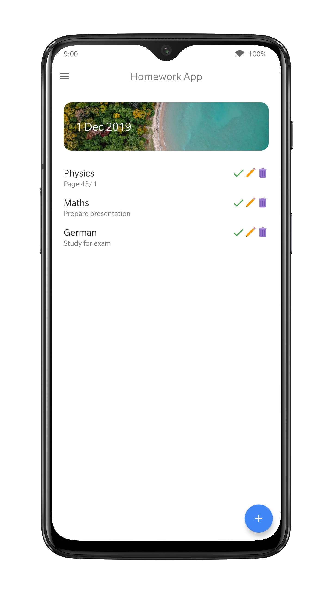
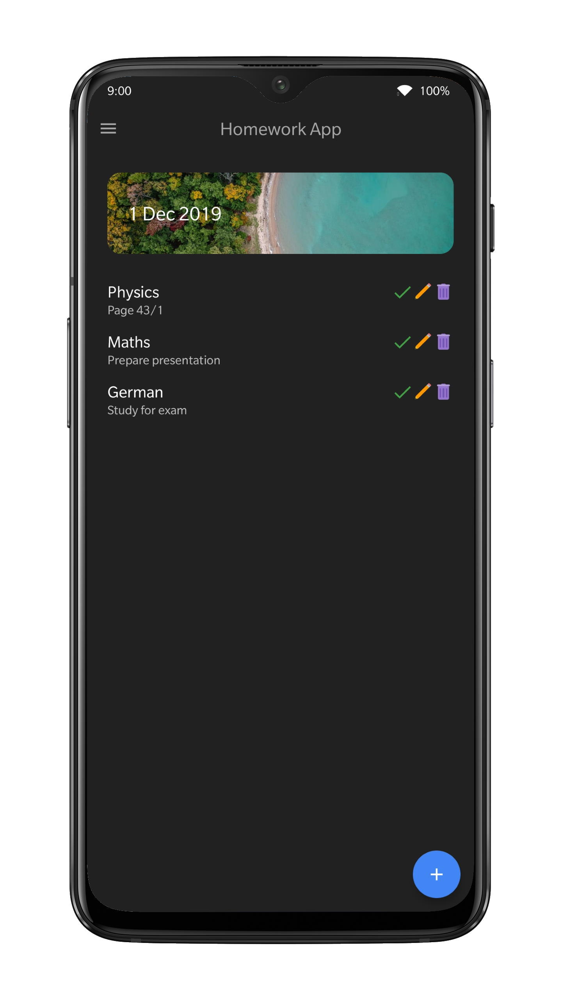
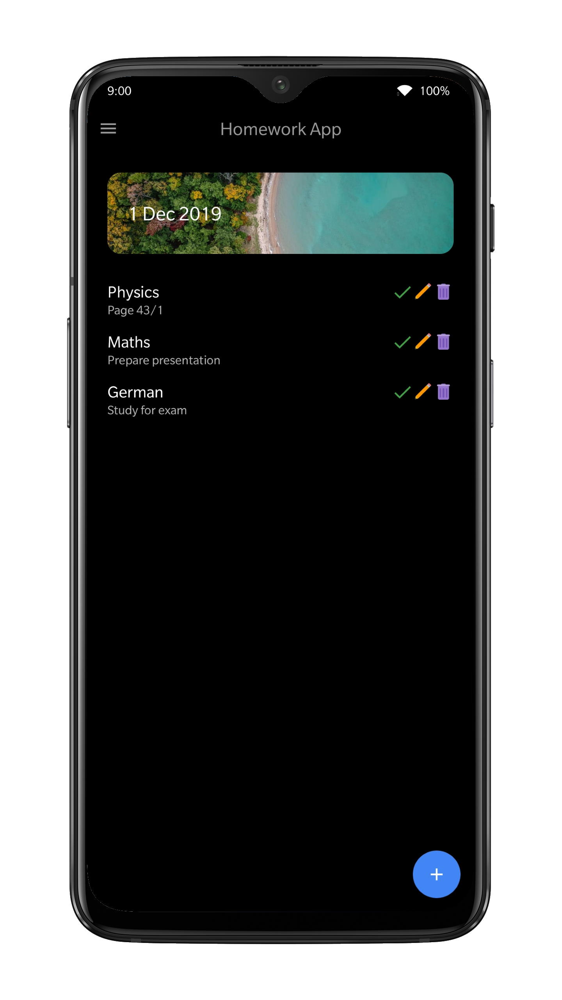

With this app, you can keep track of what you are doing by conveniently typing the tasks you want to complete sorted by date and marking them as done when you are done. Download Repository Android Studio
  